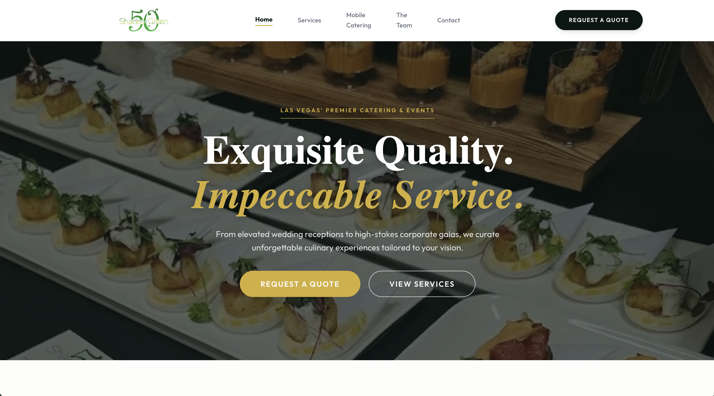

Work/50-shades-of-green.md
50 Shades of Green Catering
Description
Designed for a Las Vegas catering company, the focus was moving visitors from curiosity to contact — without letting the page structure get in the way of the brand.
Live site
Stack used
Built a production-ready marketing website using Next.js, React, and custom CSS, deployed on Netlify with optimized image delivery, responsive layouts, SEO metadata, sitemap/robots support, reusable components, and Netlify-powered contact form handling.
Screenshot
